| Variable Radix Huffman Encoding |
Huffman encoding is a method of developing an optimal encoding of the symbols
in a source alphabet using symbols from a target alphabet when the frequencies
of each of the symbols in the source alphabet are known. Optimal means the
average length of an encoded message will be minimized. In this problem you
are to determine an encoding of the first N uppercase letters (the source
alphabet,  through 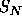 , with frequencies through 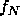 ) into the
first R decimal digits (the target alphabet, 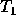 through 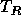 ).
through 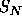 , with frequencies through 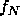 ) into the
first R decimal digits (the target alphabet, 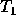 through 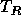 ).
Consider determining the encoding when R=2. Encoding proceeds in several
passes. In each pass the two source symbols with the lowest frequencies, say
 and 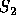 , are grouped to form a new ``combination letter" whose frequency is
the sum of and 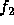 . If there is a tie for the lowest or second lowest
frequency, the letter occurring earlier in the alphabet is selected. After
some number of passes only two letters remain to be combined. The letters
combined in each pass are assigned one of the symbols from the target
alphabet.
and 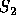 , are grouped to form a new ``combination letter" whose frequency is
the sum of and 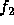 . If there is a tie for the lowest or second lowest
frequency, the letter occurring earlier in the alphabet is selected. After
some number of passes only two letters remain to be combined. The letters
combined in each pass are assigned one of the symbols from the target
alphabet.
The letter with the lower frequency is assigned the code 0, and the other letter is assigned the code 1. (If each letter in a combined group has the same frequency, then 0 is assigned to the one earliest in the alphabet. For the purpose of comparisons, the value of a ``combination letter" is the value of the earliest letter in the combination.) The final code sequence for a source symbol is formed by concatenating the target alphabet symbols assigned as each combination letter using the source symbol is formed.
The target symbols are concatenated in the reverse order that they are assigned so that the first symbol in the final code sequence is the last target symbol assigned to a combination letter.
The two illustrations below demonstrate the process for R=2.
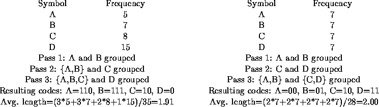
When R is larger than 2, R symbols are grouped in each pass. Since each pass effectively replaces R letters or combination letters by 1 combination letter, and the last pass must combine R letters or combination letters, the source alphabet must contain k*(R-1)+R letters, for some integer k.
Since N may not be this large, an appropriate number of fictitious letters with zero frequencies must be included. These fictitious letters are not to be included in the output. In making comparisons, the fictitious letters are later than any of the letters in the alphabet.
Now the basic process of determining the Huffman encoding is the same as for the R=2 case. In each pass, the R letters with the lowest frequencies are grouped, forming a new combination letter with a frequency equal to the sum of the letters included in the group. The letters that were grouped are assigned the target alphabet symbols 0 through R-1. 0 is assigned to the letter in the combination with the lowest frequency, 1 to the next lowest frequency, and so forth. If several of the letters in the group have the same frequency, the one earliest in the alphabet is assigned the smaller target symbol, and so forth.
The illustration below demonstrates the process for R=3.
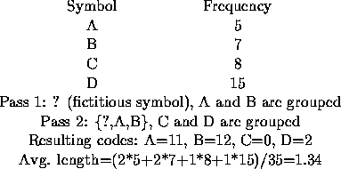
The input will contain one or more data sets, one per line. Each data set consists of an integer value for R (between 2 and 10), an integer value for N (between 2 and 26), and the integer frequencies through , each of which is between 1 and 999.
The end of data for the entire input is the number 0 for R; it is not considered to be a separate data set.
For each data set, display its number (numbering is sequential starting with
1) and the average target symbol length (rounded to two decimal places) on one
line. Then display the N letters of the source alphabet and the corresponding
Huffman codes, one letter and code per line.
Print a blank line after each test case.
The examples below illustrate the
required output format.
2 5 5 10 20 25 40 2 5 4 2 2 1 1 3 7 20 5 8 5 12 6 9 4 6 10 23 18 25 9 12 0
Set 1; average length 2.10
A: 1100
B: 1101
C: 111
D: 10
E: 0
Set 2; average length 2.20
A: 11
B: 00
C: 01
D: 100
E: 101
Set 3; average length 1.69
A: 1
B: 00
C: 20
D: 01
E: 22
F: 02
G: 21
Set 4; average length 1.32
A: 32
B: 1
C: 0
D: 2
E: 31
F: 33